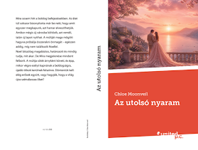

{kind=link}
Chloe Moonveil vagyok, 14 éves, és nagyon örülök, hogy ellátogattatok a blogomra. Már 12 éves korom óta írok történeteket, mert mindig is szerettem a könyvek világát és azt, hogy a képzeletem segítségével új történeteket alkothatok.
Az olvasás és az írás az egyik kedvenc elfoglaltságom. Amikor írok, teljesen elmerülhetek a szereplők életében, az érzéseikben és a kalandjaikban. Számomra minden történet egy külön világ, amelyet lépésről lépésre fedezhetek fel.
Ezen a blogon szeretném megosztani veletek az írás kulisszatitkait, a könyveimmel kapcsolatos híreket, valamint bepillantást engedni abba, hogyan születnek meg a történeteim. Emellett mesélni fogok az első könyvemről, az „Az utolsó nyaram” című romantikus regényről is.
Története
"Minden történet egy új világ kapuja."
Ez a történet szerelemről, fájdalomról, újrakezdésről és a nehéz döntésekről szól. Nagyon sok időt és energiát fektettem bele, ezért különösen közel áll a szívemhez.
Sikerem
Mindig is szerettem az érzelmes történeteket, különösen azokat, amelyek nemcsak a szerelemről szólnak, hanem a veszteségről, a reményről és az újrakezdésről is. Egy nap azon gondolkodtam, mi történne, ha két olyan ember találkozna, akik mindketten hordoznak magukban fájdalmat, mégis képesek lennének segíteni egymásnak továbblépni.
Ez a gondolat sokáig velem maradt. Jegyzetelni kezdtem az ötleteimet, és lassan kirajzolódott előttem egy történet. Megszülettek a szereplők, a helyszínek és azok az események, amelyek végül a könyv részévé váltak. Az írás során rengeteget tanultam.
Voltak napok, amikor könnyen ment minden, és voltak olyanok is, amikor órákig ültem egyetlen jelenet felett. Mégis minden percét élveztem, mert tudtam, hogy valami olyasmin dolgozom, ami fontos számomra. Az Az utolsó nyaram nemcsak egy történet lett számomra, hanem egy hosszú utazás is. Egy olyan utazás, amely során fejlődtem íróként, és egy kicsit talán emberként is. A következő bejegyzésben bemutatom nektek a könyv egyik főszereplőjét, és mesélek arról, milyen személyiség áll a történet középpontjában.
